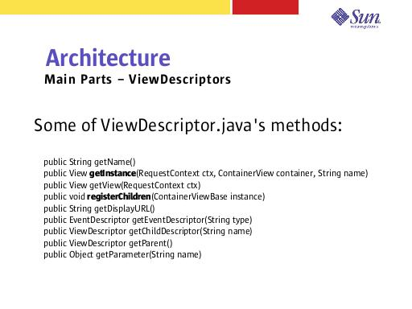

Notes:
getInstance() is needed by the framework for instantiating the View corresponding to the ViewDescriptor. ViewDescriptor.java does not provide an implementation for this method, it is up to each individual ViewDescriptor to determine how it should create its View object.
ViewDescriptor.java provides a default registerChildren() method that usually is good enough. If additional registration is needed (beyond what is in the XML hierarchy), this is the spot to do it.